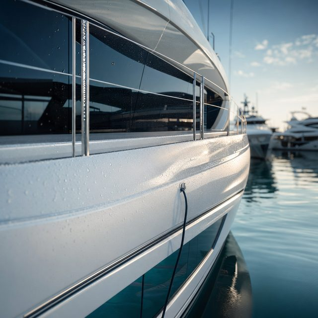
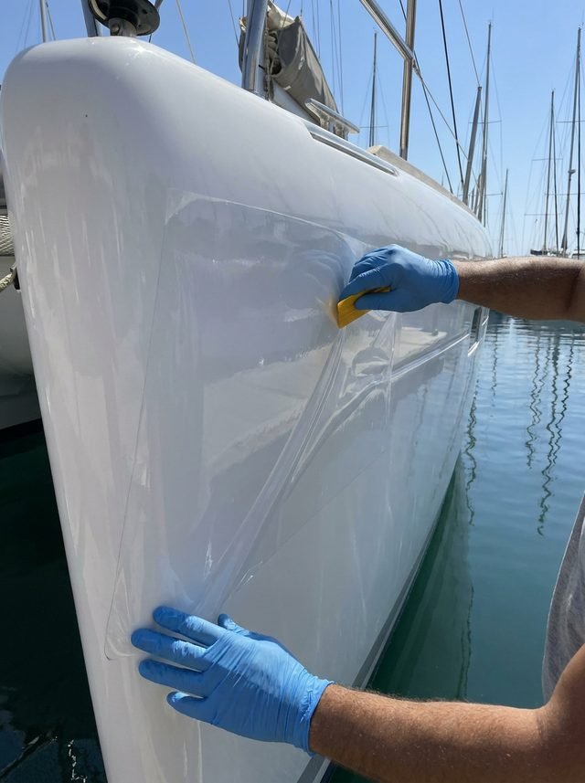
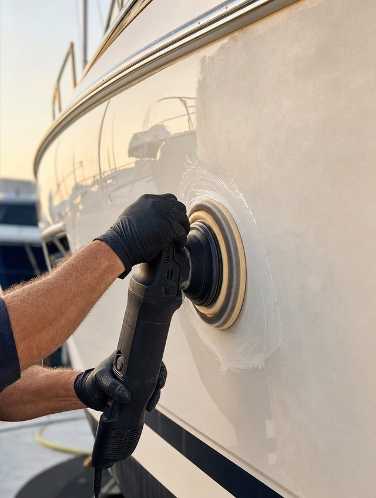
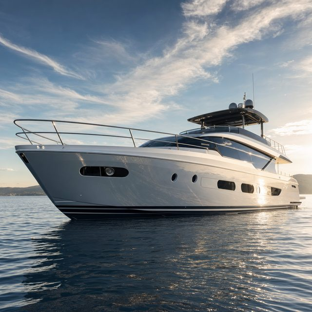
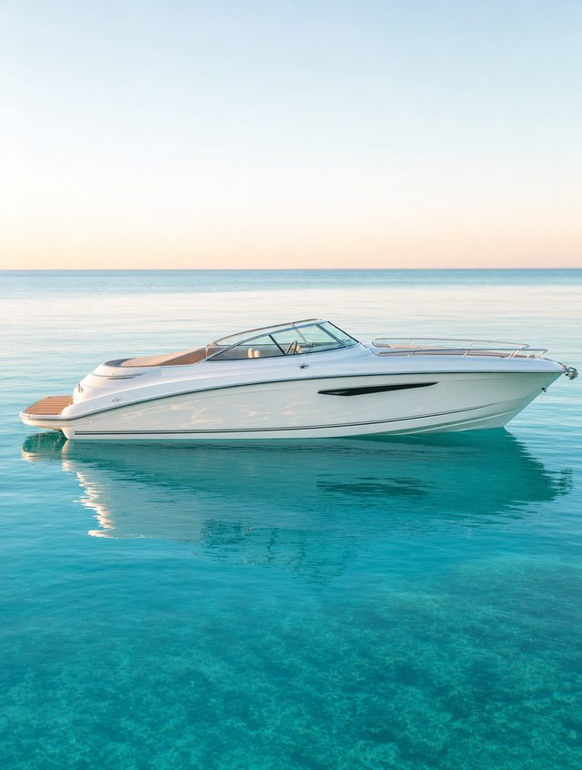
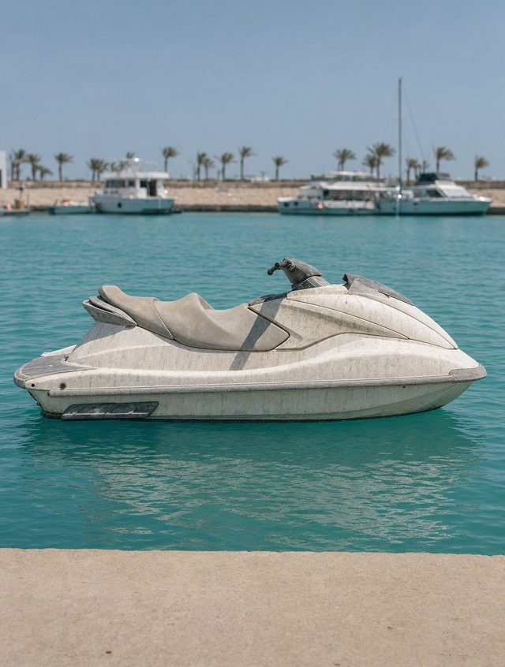

Motor Yacht
Service Correction + Ceramic GrapheneOxidation L2Where El Gouna
Results
Drag each waterline to restore the gloss — matte, oxidized gelcoat resolving into a protected, reflective finish.
Each frame is real protected-surface photography — drag to compare it against a representative oxidized state. Matched same-vessel before/after pairs from completed jobs drop straight into the slider as they’re confirmed.






Book an inspection
Book a free inspection and we will show you exactly what correction and protection can recover on your hull.